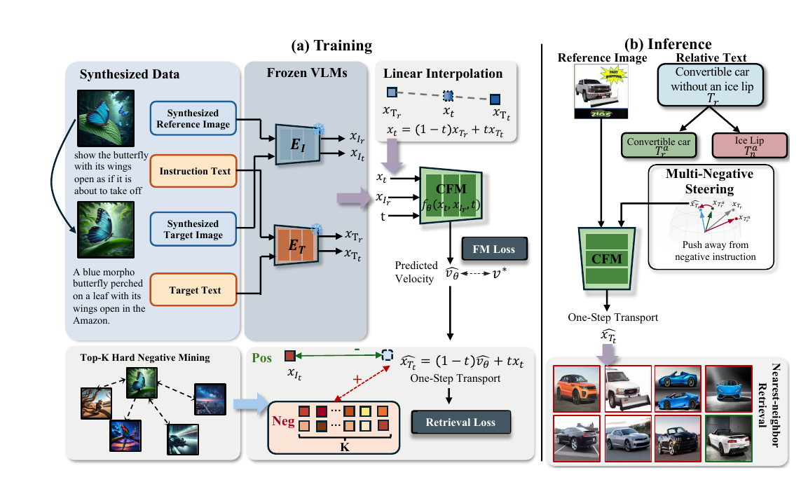
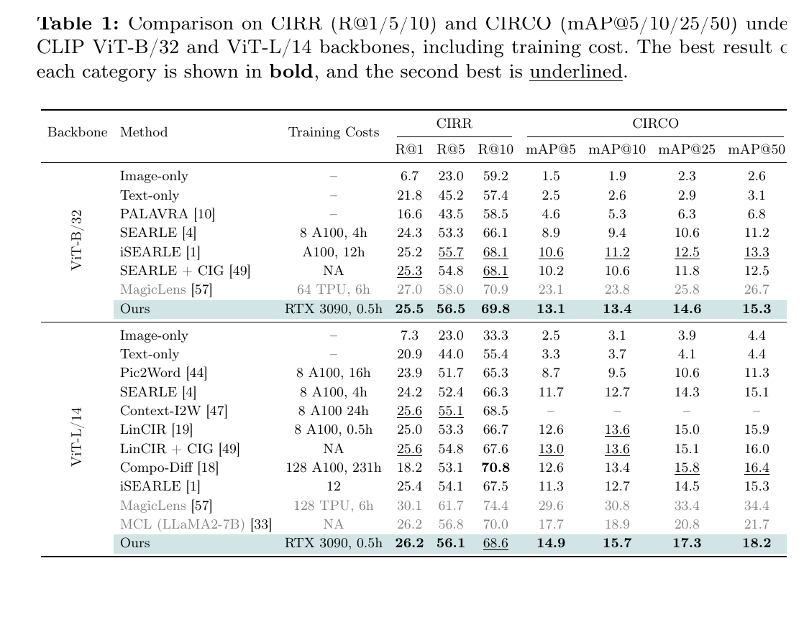
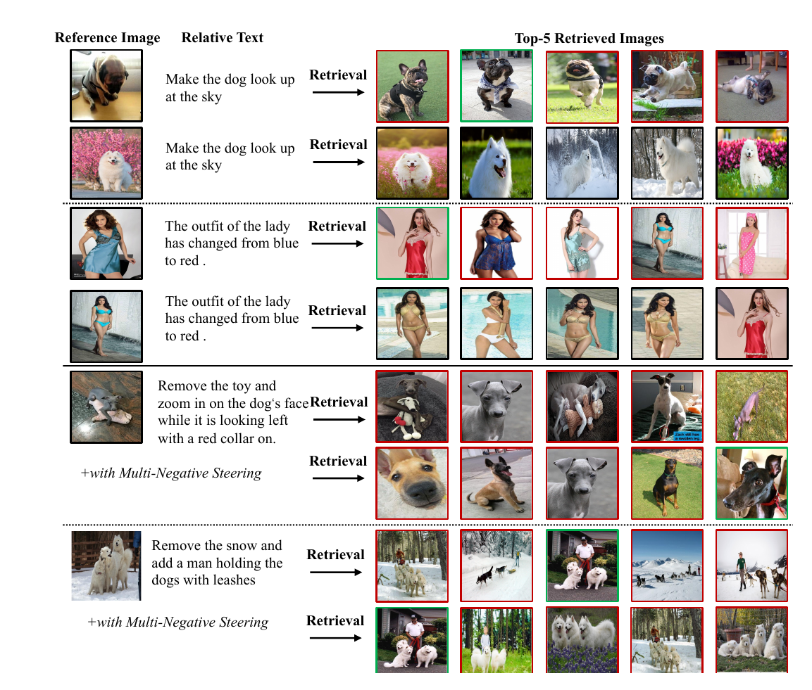

FlowCIR studies zero-shot composed image retrieval, where a target image is retrieved by applying a natural-language edit to a reference image without domain-specific CIR triplets. Instead of compressing the reference image into pseudo-text tokens, FlowCIR treats composition as conditional semantic transport: a lightweight flow-matching module transports the relative-instruction embedding toward a target-aligned query embedding under the reference-image condition. The image and text encoders stay frozen, making training efficient on pre-extracted VLM features. To address negation and removal queries, FlowCIR also introduces an inference-only Multi-Negative Steering strategy that pushes the instruction representation away from negated concepts before retrieval.



@misc{he2026flowcir,
title = {FlowCIR: Semantic Transport via Flow Matching for Zero-Shot Composed Image Retrieval},
author = {He, Zhenqi and Jiang, Ziqi and Liu, Yuanpei and Wang, Yanghao and Wang, Teng and Chen, Long},
year = {2026}
}